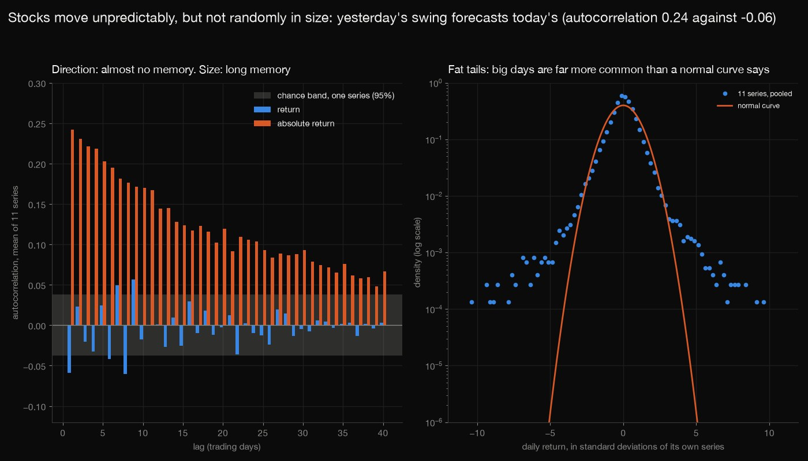
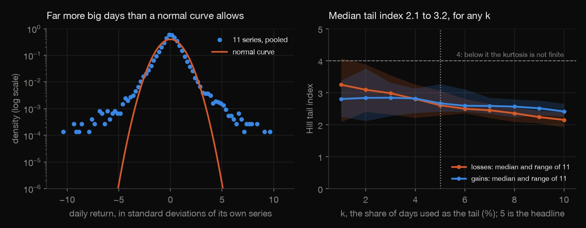
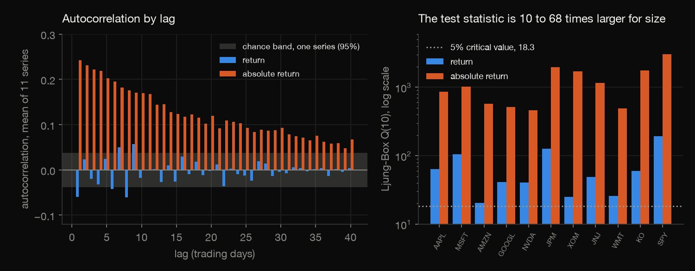
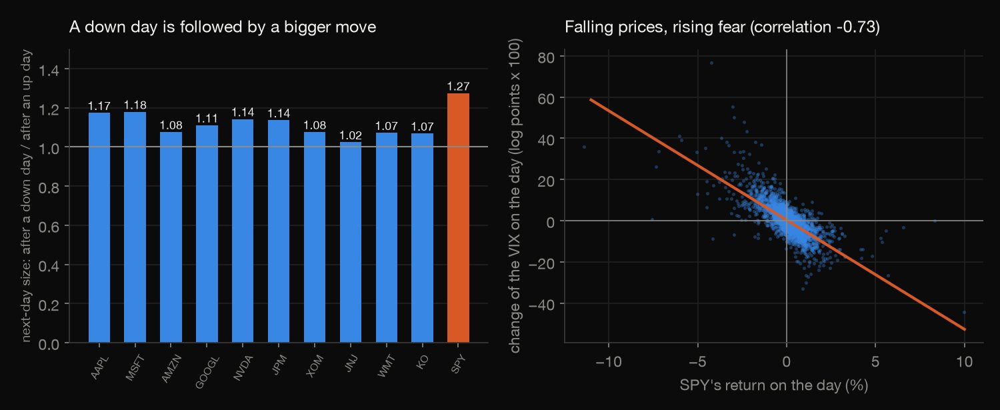
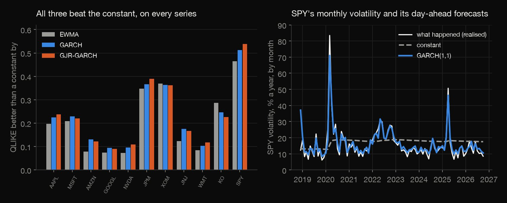
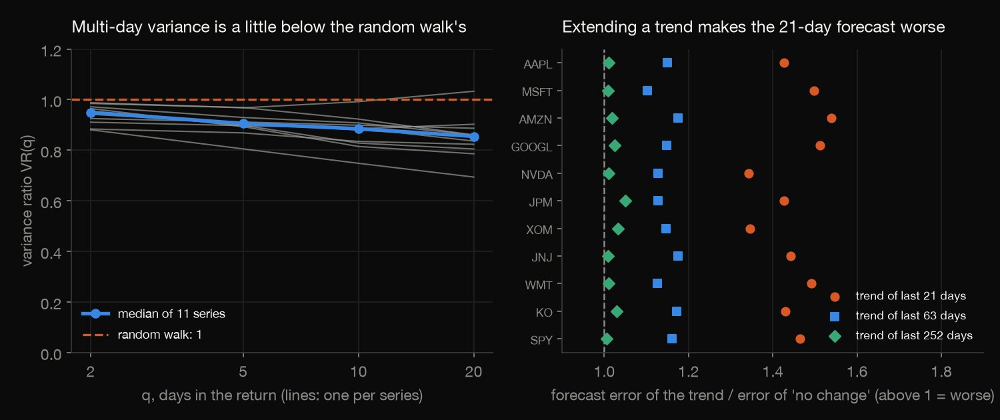

Python · Time series · 2026-10
What part of a stock's move is predictable?
Ten large stocks and SPY over 2,702 days: direction has almost no memory (lag-1 autocorrelation -0.06), size has plenty (0.24); tails are fat (tail index 2.3 to 3.3); GARCH beats a constant on all 11 series; trend forecasts lose to "no change" on all 11.

Historical description, not investment advice. Ten large stocks picked in 2026 (selection bias inflates drift), one decade, 11 correlated series. Prices: Alpaca Markets consolidated daily bars, adjusted; Alpaca's terms forbid redistribution, so only our statistics are published. FRED's SP500 (S&P Dow Jones Indices, pre-approval required) and VIXCLS (CBOE, citation required) yield only one correlation and one slope. The GARCH fits are verified by properties, not refitted, in the check.
01 — The problem
Stock prices look like they have patterns, and some of what is said about them is true and some is not. What part of a stock's move is predictable: its direction, its size, or neither?
The task follows GeeksforGeeks' "Stock Price Time Series Analysis". The data is ten large US stocks and the S&P 500 fund over 2,703 trading days, tested for the facts every return series shows (fat tails, volatility clustering, leverage) and for whether trends or volatility models forecast anything out of sample.
02 — What I built
Daily adjusted prices of 11 series, tested five ways:
- The tails: kurtosis, and the Hill tail index with its sensitivity to the threshold.
- The memory: autocorrelation of returns and of absolute returns, with Ljung-Box tests.
- The leverage effect: what follows a down day, GJR-GARCH asymmetry, the VIX.
- The forecasts: constant, EWMA, GARCH and GJR-GARCH variance forecasts, walk-forward, scored by QLIKE; and trend forecasts against no change.
- Check:
check.pyrecounts 3,475 numbers in plain Python, with no data or statistics library, and verifies the 682 GARCH fits by properties.
03 — How it was built
- 01
Download the prices without redistributing them
Daily bars from the Alpaca Markets API with a free paper-trading account (keys read from a local file, never printed), split- and dividend-adjusted, with FRED's S&P 500 and VIX. The first plan, the free IEX feed, starts only in July 2020 and misses the 2020 crash, so the consolidated feed is used. Alpaca's terms forbid redistribution: the 2.8 MB file stays local and only our statistics are published.
q = {"symbols": sym, "timeframe": "1Day", "start": START, "end": end, "adjustment": "all", "feed": FEED, "limit": 10000, "sort": "asc"} - 02
Measure the tails
Kurtosis is sensitive to a few days, so the Hill estimator is used as well: for the k largest losses (and, separately, gains), the tail index is k over the sum of the logs of each tail value to the (k+1)-th, with k = 5% of the days and 1% to 10% as a check.
return k / np.log(s[:k] / s[k]).sum(), s[k] - 03
Forecast volatility with only the past
GARCH(1,1) says today's variance is a constant plus a share of yesterday's squared return plus a share of yesterday's variance; GJR adds extra weight after down days. Both are fitted by normal quasi-maximum likelihood on all returns so far, refitted every 63 days; the variance recursion is a linear filter of the squared returns.
x[1:] = om + (al + (ga * (r[:-1] < 0) if kind == "gjr" else 0)) * r[:-1] ** 2 - 04
Score by QLIKE and test the random walk
Each day's forecast variance h is scored against the day's squared return r2 by r2/h + ln h (QLIKE, lower is better; it does not blow up on quiet days). The variance ratio test compares the variance of q-day returns with q times the daily one; the weights below make it robust to volatility clustering.
th = sum((2 * (q - j) / q) ** 2 * (d2[j:] * d2[:-j]).sum() / den for j in range(1, q)) - 05
Recount it all without the libraries
check.pyrecomputes the returns, moments, Hill indices, autocorrelations, Ljung-Box tests (exact chi-square tail), every walk-forward forecast, the scores and Diebold-Mariano tests, the variance ratios and the trend forecasts: 3,475 numbers to a relative tolerance of 1e-8. The GARCH fits are checked by properties: likelihood recomputed, parameters feasible, no small perturbation better.th = sum((2 * (q - j) / q) ** 2 * sum(d2[t] * d2[t - j] for t in range(j, N)) / den for j in range(1, q))
04 — Results
Fat tails. Excess kurtosis is 4.4 to 13.2 (median 8.7), and 1.1% to 1.7% of days lie beyond 3 standard deviations (normal: 0.27%). The Hill tail index, from the 5% largest losses and gains, is 2.3 to 3.3, and its median stays between 2.1 and 3.2 for any k from 1% to 10%. Below 4 the kurtosis is infinite in theory, so the kurtosis column is dominated by a few days: 16 of the 33 largest moves (three per series) fall between February and April 2020.
| Series | Kurtosis | Tail, loss | Tail, gain |
|---|---|---|---|
| AAPL | 6.5 | 2.58 | 2.92 |
| MSFT | 8.7 | 3.07 | 2.59 |
| AMZN | 5.4 | 2.71 | 2.73 |
| GOOGL | 4.4 | 2.60 | 2.67 |
| NVDA | 6.6 | 2.87 | 3.21 |
| JPM | 13.1 | 2.63 | 2.52 |
| XOM | 5.6 | 2.65 | 3.27 |
| JNJ | 9.2 | 2.43 | 2.60 |
| WMT | 13.2 | 2.49 | 2.41 |
| KO | 9.7 | 2.28 | 2.61 |
| SPY | 13.0 | 2.42 | 2.84 |

Direction has almost no memory; size has a long one. The lag-1 autocorrelation of returns averages -0.06 and no lag to 40 exceeds 0.12 in size; Ljung-Box on 10 lags still rejects zero at 5% for 11 of 11 series, which fat tails and clustering make likely to be overstated. For absolute returns, lag 1 averages 0.24 (0.14 to 0.35), outside the 95% band at each of the first 10 lags in every series, and Q(10) is 10 to 68 times larger than for returns.

Falling prices, fatter next days. The next day's absolute return is higher after a down day in 11 of 11 series, by 1.02 to 1.27 times (SPY 1.27). In SPY's GJR-GARCH fit a 1% fall raises the next day's variance 6.7 times as much as a 1% rise, and its daily return and the change of the log VIX correlate -0.73: the VIX rises 5.3% for each 1% fall.

Volatility can be forecast; direction cannot. Walking forward over 1,952 days from 27 December 2018, with only the past, EWMA, GARCH(1,1) and GJR-GARCH(1,1) beat a constant on QLIKE for all 11 series (average gain 0.21, 0.23 and 0.23 on a constant's 2.16); the gain is significant at 5% for 4, 7 and 6 series (Diebold-Mariano, Newey-West). GARCH beats EWMA on 9 of 11 and GJR beats GARCH on 5, so the asymmetry adds little. In March 2020 SPY's volatility was 83% a year; GARCH forecast 71%, EWMA 60% and the constant 16%.
| Series | EWMA | GARCH | GJR |
|---|---|---|---|
| AAPL | 0.20 | 0.22 | 0.24 |
| MSFT | 0.21 | 0.23 | 0.22 |
| AMZN | 0.08 | 0.13 | 0.12 |
| GOOGL | 0.07 | 0.09 | 0.09 |
| NVDA | 0.07 | 0.10 | 0.11 |
| JPM | 0.35 | 0.37 | 0.39 |
| XOM | 0.37 | 0.36 | 0.36 |
| JNJ | 0.12 | 0.17 | 0.17 |
| WMT | 0.08 | 0.10 | 0.12 |
| KO | 0.29 | 0.25 | 0.23 |
| SPY | 0.46 | 0.51 | 0.54 |

Trends fail as forecasts. Variance ratios are below 1 in 43 of 44 cases (median 0.95 at 2 days to 0.85 at 20), but the robust test rejects a random walk in only 6 (GOOGL, MSFT, NVDA, SPY). Forecasting the log price 21 days ahead, extending the recent trend is worse than "no change" in every series for each look-back: the table gives, for each look-back, the median ratio of errors, the number of the 11 series where it is worse, and where it is significantly worse (paired t above 1.96, 116 non-overlapping forecasts each). "Above its 200-day average means up" is right 57% of the time against 62% for "always up".
| Trend | Error ratio | Worse | Sig. |
|---|---|---|---|
| 21 days | 1.44 | 11 | 11 |
| 63 days | 1.15 | 11 | 9 |
| 252 days | 1.01 | 11 | 0 |

05 — What I'd do next
- Use intraday prices to score volatility against realised variance instead of squared returns, and split the gains between calm and turbulent periods.
- Add Student-t errors and value-at-risk backtests, to see whether the fat tails change the risk limits a forecaster would draw.
- Repeat the tests on a stock list fixed in 2016 rather than today's, to see how much of the trend results is selection.